These are the voyages of Justin Cory in DES 341
Week Nine: Excellent Portfolio Site
Mar 09, 2023
The Toy Fight Creative Agency make super compelling work and their site features tons of fun animations and interactions to showcase their personality and style. I love the way they show their work with animated figurines. The only downside of this site is that the interactivity does make some of the load times and navigation a little slower.
Week Five: Two Sites I Would Make Over
Feb 08, 2023
For the Out to Pasture website, I would immediately want to handle the navigation more neatly. Having 8 buttons and then no real introduction "above the fold" is less than ideal. The logo is cut in half because the content is overflowing to create a horizontal scroll as well. I also think that rather than a slideshow, an animation of animals on a pasture would be a really fun interaction to introduce visitors to the non-profit. The main CTA is that people donate or volunteer so that should be more emphasized than other nav items. I also think they are missing many opportunities to play up the cuteness of the animals they have rescued. Right now they are displayed in a grid with light-box pop-ups featuring contextual info and a photo of the animal. I think they could play with how these animal profiles are displayed and how the user interacts with them.
Wildwood Sanctuary handles the intro and navigation to their homepage better than OTP, however, they still rely on photo carousels to engage viewers. I also don't like the huge social media buttons so prominently displayed. They would also benefit for more interactive elements like animations or video to pull on visitor's heart-strings and get them to donate or volunteer. Each of the subpages are very simple with photos and body text, they could have each section be more of a narrative that the user is guided through on scroll with animations and other interactive elements telling the story of the animals, the people, and the place.

Week Four: Ye Olde Internets
Jan 24, 2023
Being 39 years old means that my introduction to the internet was in the mid-1990s. I remember playing Oregon Trail and math games like Number Crunchers. I also remember doing research at that time on the web and how distinct the visual design language was then. One of the first funny websites I frequented was Ebaum's World, an early predecessor of our meme-driven reality today. I also remember my friends using Live Journal as an early form of social media, although my family could not afford a computer so I wasn't able to participate in that platform.
Later on I remember Friendster and I think I had one although I didn't become an avid user of social media platforms until the rise and fall of Myspace. Finally, I have been a serious Radiohead fan for several decades and beyond their websites always evolving in distinctive ways alongside the technological and cultural environments we are in at the time, they also have been proponents of novel approaches to technology as demonstrated by their "pay-what-you-want" digital release of their album In Rainbows.
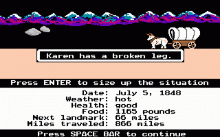
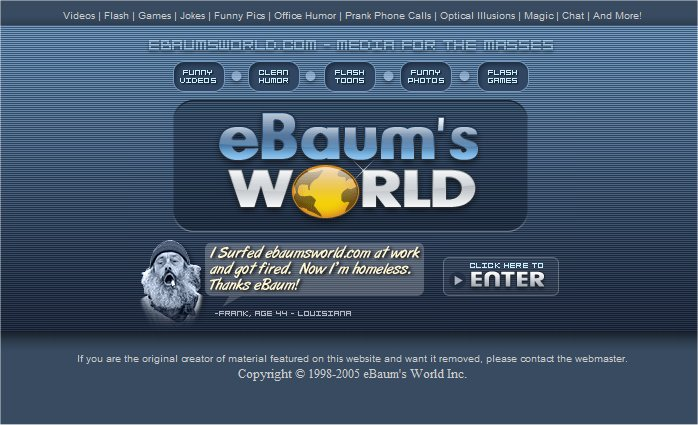
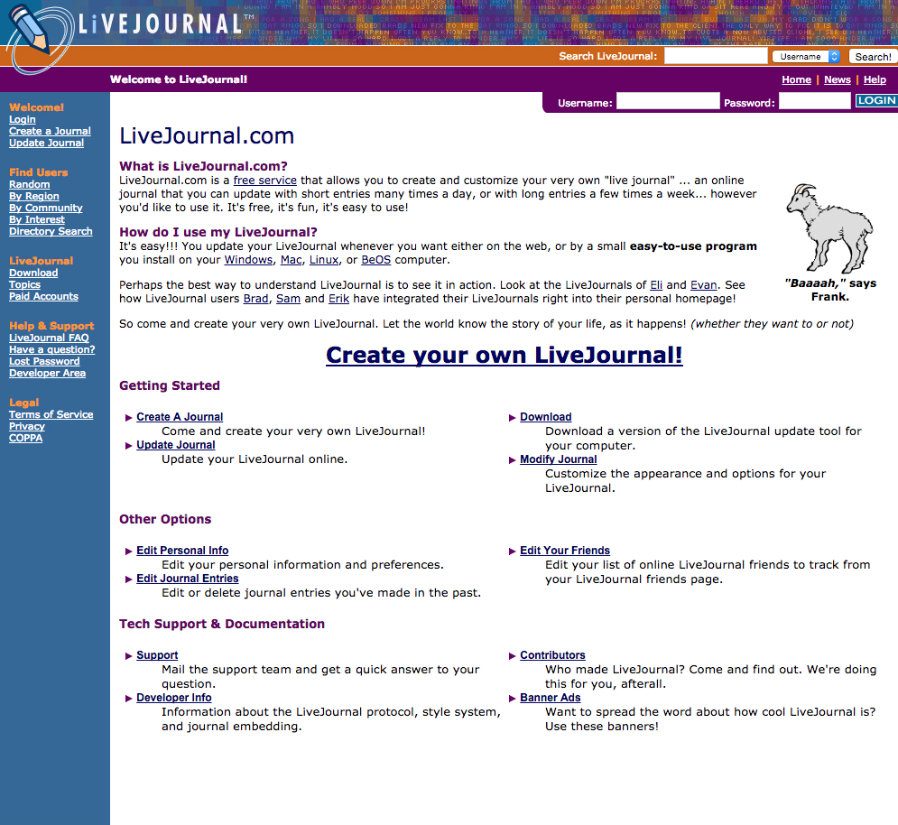
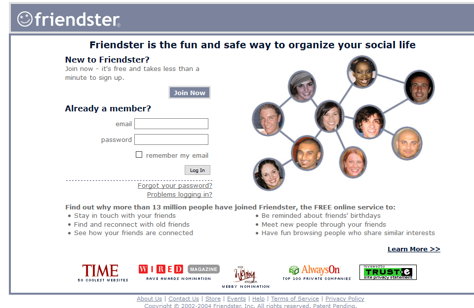
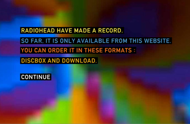
Week Three: Project One Rationale
Jan 24, 2023
I have landed on creating a website about four of the main archetypes extrapolated by the famed psychologist Carl Jung; the self, the persona, the shadow self, and the anima/animus. I am drawn to his evocative premises and also the visual language they inspire. I plan to use art made by Carl Jung himself as part of the assets, to have links to more resources, and to possibly incorporate contextual videos on each of these. I am excited to create a metaphysical tarot-influenced grid layout and visual language for this project and to try and play with overlapping elements and some fun micro-interactions.
Week Two: Inspo Websites
Jan 17, 2023
- Apeel This website has incredible animations on scroll, employs the parallax effect really well, and features a tasteful use of horizontal scrolling.
- Hot büro A design with very innovative shapes and unique buttons and layout.
- Angelo Torres Maximalism to the MAX! I love the animations and icons although I would reign it in myself.
- mttr design co This designer showcases a subtle use of parallax and brilliant micro-interactions.
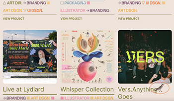
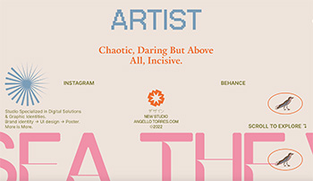
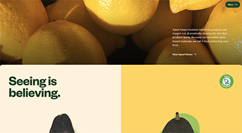
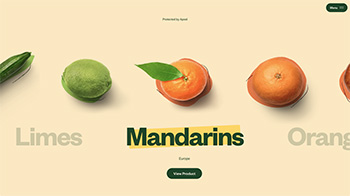
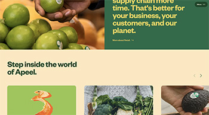
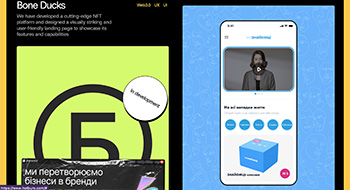
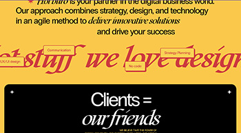
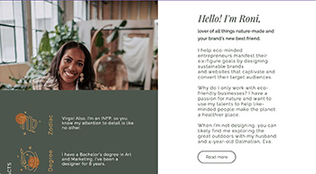
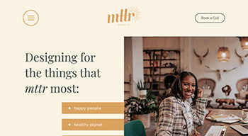